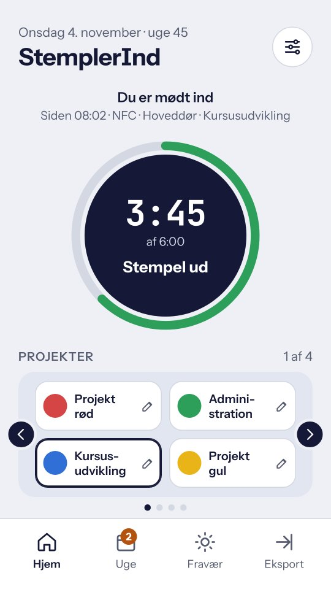
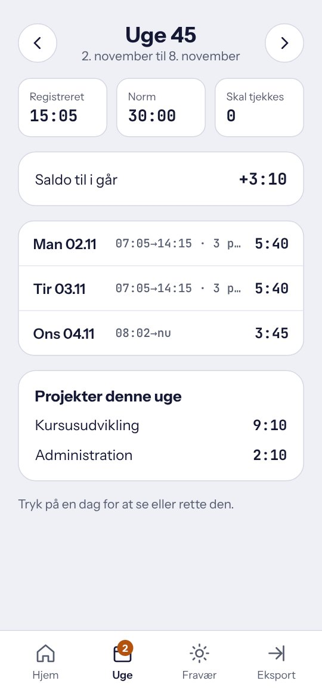
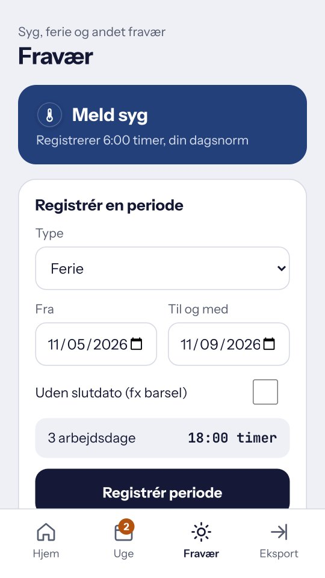
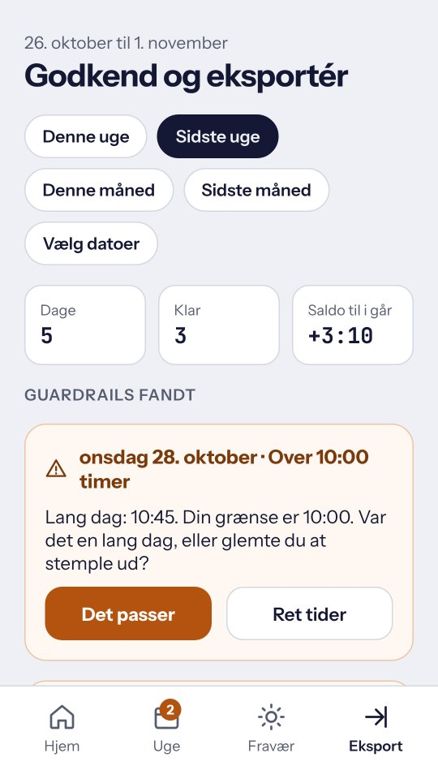
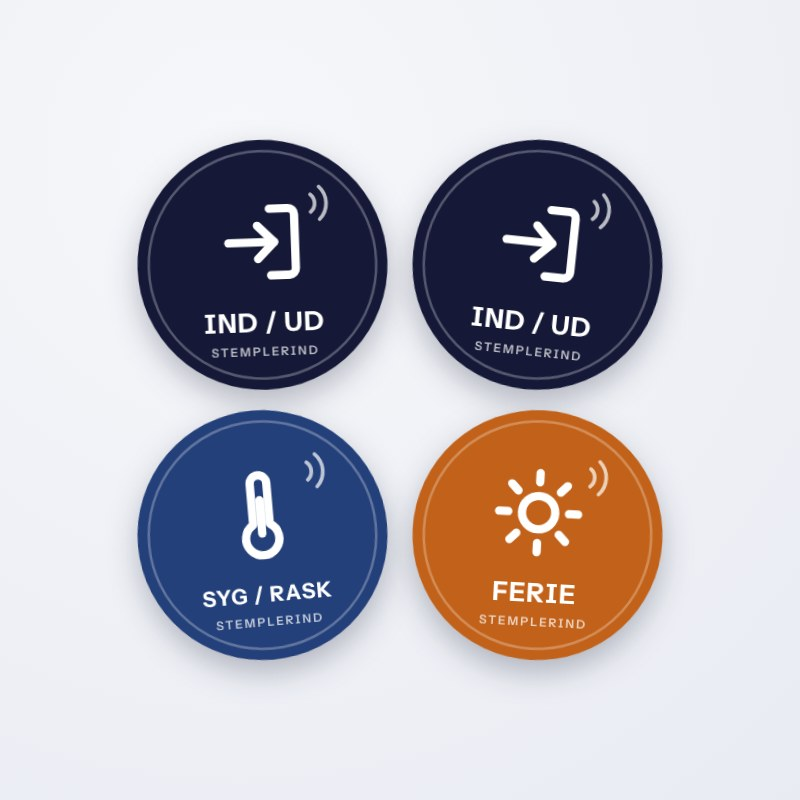
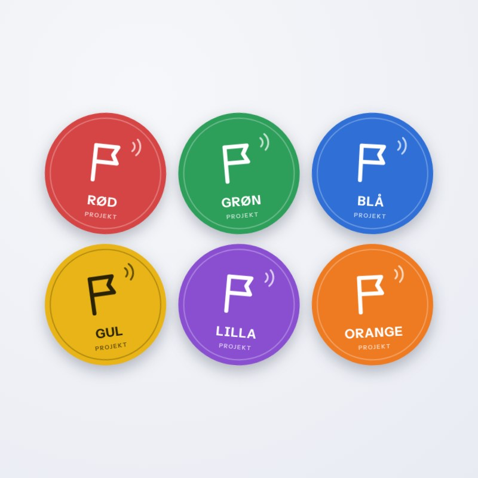
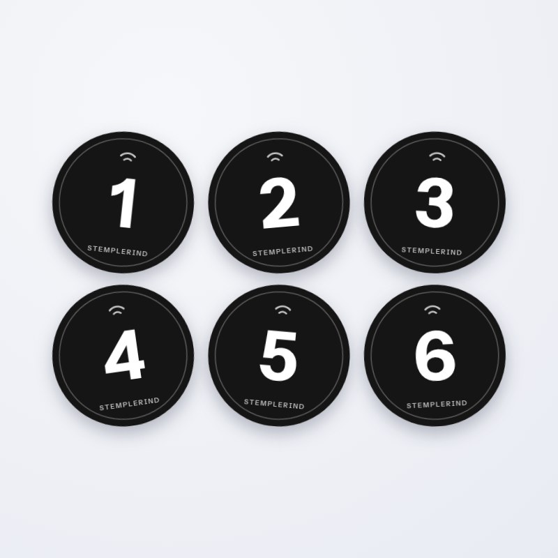
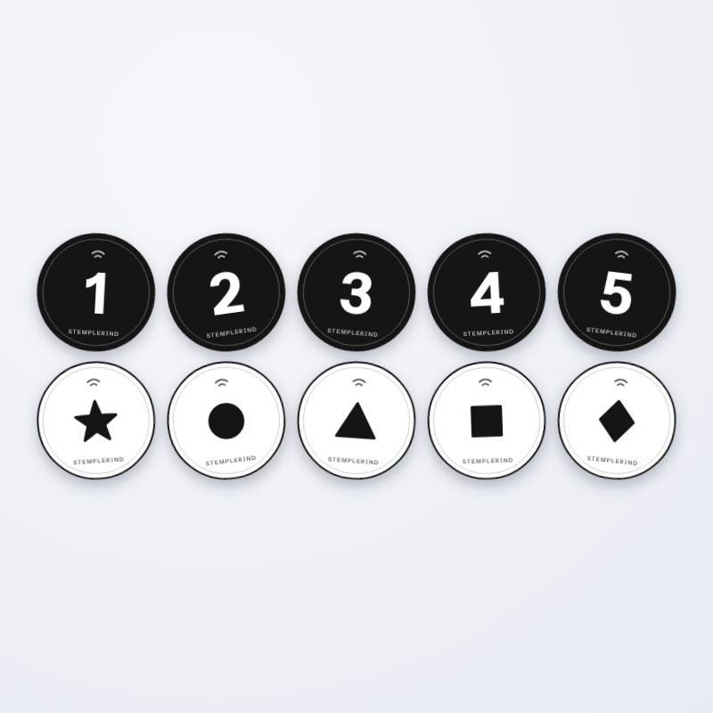
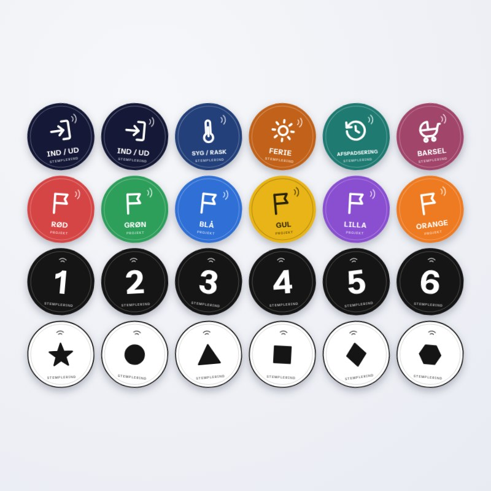
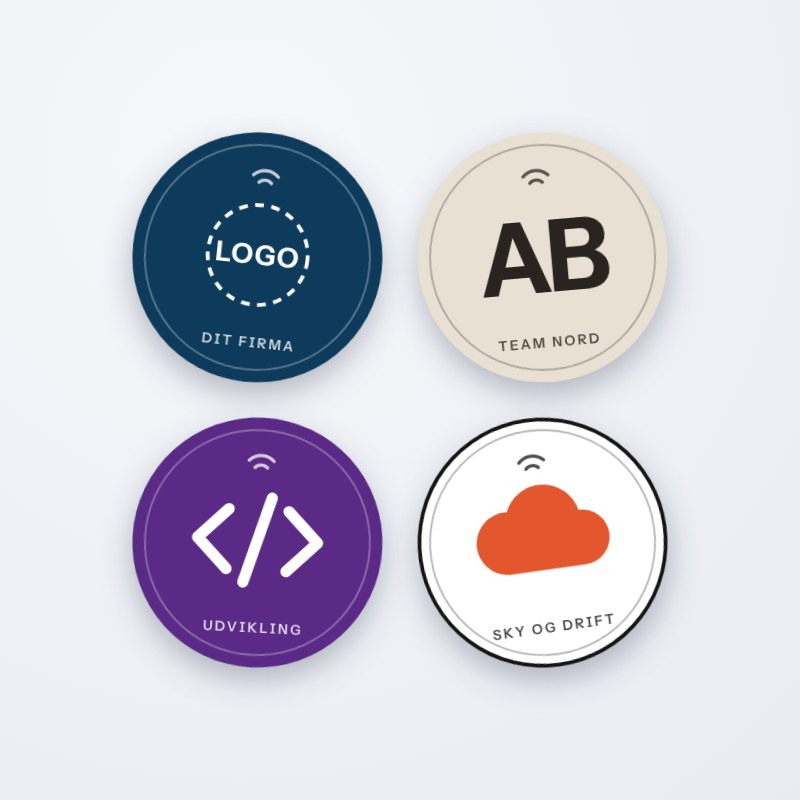

StemplerInd
StemplerIndEin und aus
- 1. Scan
- Stempelt dich ein.
- 2. Scan
- Stempelt dich aus. Mittagspause oder Termin außer Haus: einfach erneut scannen.
Klebe einen kleinen Aufkleber an die Tür. Halte das Telefon daran, wenn du kommst, und wieder, wenn du gehst. Die App rechnet die Zeit zusammen und erstellt den Stundennachweis.
Die Tags kommen auf einem Bogen. Zieh sie ab und klebe sie dorthin, wo du vorbeikommst: an die Tür, an den Schreibtisch oder ins Auto. Sie brauchen keinen Strom und sind gesperrt, sodass niemand sie überschreiben kann.
StemplerInd ist kostenlos. Die App funktioniert mit den Tags, mit einem Knopf auf dem Bildschirm, mit einem Widget und mit Verknüpfungen.




Die App weiß, ob du da bist oder nicht. Deshalb reicht ein Tag, egal wie oft du zur Mittagspause, zum Termin oder nach Hause gehst.
An der Eingangstür, am Schreibtisch oder im Auto. Der Tag ist ein Aufkleber mit 30 mm und braucht keinen Strom.
Halte das Telefon an den Tag. Es vibriert, und du bist eingestempelt. 15 Sekunden lang kannst du es rückgängig machen.
Derselbe Tag stempelt dich aus. Die Abschnitte des Tages werden zusammengerechnet und stehen in der Woche und im Export bereit.
Der erste Scan schaltet ein, der nächste aus. Das gilt für ein und aus, Krankheit, Urlaub und Überstundenabbau.
Rot kann ein Kunde sein, Grün der Unterricht und Blau die Verwaltung. Beim ersten Scan eines farbigen Tags legt die App das Projekt an. Den Namen vergibst du unter Einstellungen.
Für einen ruhigen Schwarz-Weiß-Look oder wenn du mehr Projekte brauchst. Die Tags funktionieren genau wie die farbigen, und es steht kein Text darauf, sie passen also zu jeder Sprache.
Alle Tags sind einsatzbereit und gesperrt, niemand kann sie überschreiben.

Alles, was du zum Ein- und Ausstempeln und für Abwesenheiten brauchst.

Sechs farbige Tags für Projekte, Kunden oder Arbeitsbereiche. Du legst fest, was jede Farbe bedeutet.

Sechs schwarze Projekt-Tags mit den Zahlen 1 bis 6. Leicht zu überblicken und ohne Text.

Sechs weiße Projekt-Tags mit schwarzen Symbolen. Ruhig im Look und ohne Text.

Das Starterset, Elternzeit und alle 18 Projekt-Tags: Farben, Zahlen und Symbole. Für alle, die alles im Griff haben wollen.

Für Firmen, Teams und Events. Wir bedrucken die Tags mit eurem Logo, euren Farben oder eigenen Symbolen, zum Beispiel für Abteilungen, Kunden oder die Systeme, mit denen ihr arbeitet. Schreibt uns, dann klären wir Menge, Design und Lieferung.
Für Firmen, die die Zeiten ihrer Mitarbeitenden an einem Ort sammeln wollen. Wir bauen eine Version, die zwischen Mitarbeitenden und Geräten synchronisiert. Schreibt uns, wenn ihr beim Pilotprojekt dabei sein wollt.
Die kostenlose App bleibt unverändert. Nutzt du sie privat, bleiben deine Daten nur auf deinem Telefon.
Dieselbe Idee wie StemplerInd, nur für zu Hause. Bring einen NFC-Tag am Wasserkocher, am Abfluss oder am Rauchmelder an und wähle, wie oft es fällig ist. Plejer zählt herunter und erinnert den ganzen Haushalt, bis jemand den Tag scannt.
Nur eine Webadresse und der Name der App. Keine persönlichen Daten. Alle Tags derselben Art sind gleich.
Nein. Der Tag wird per NFC gelesen, und alles wird auf dem Telefon gespeichert.
Der Tag öffnet Google Play, damit du sie laden kannst. Beim nächsten Mal öffnet er direkt die App.
Die App sagt dir am nächsten Tag Bescheid und schlägt eine Uhrzeit auf Basis deiner anderen Tage vor. Du kannst die Zeiten auch selbst korrigieren.
Ja. Kauf weitere Ein und aus-Tags und bring sie an der Tür, am Schreibtisch und im Auto an. Sie tun alle dasselbe.
Ja. Die App gibt es auf Deutsch, Dänisch, Englisch, Schwedisch und Norwegisch. Du wechselst die Sprache mit der Flagge unter Einstellungen. Die farbigen Tags sind auf Dänisch bedruckt, die Symbol-Tags haben keinen Text, und alle funktionieren in jeder Sprache.
Die App kommt zuerst für Android. Die iPhone-Version ist unterwegs, und dieselben Tags werden dort funktionieren.
Nein. Deine Daten liegen nur auf deinem Telefon. Du entscheidest selbst, wann du einen Zeitraum exportierst und versendest.
Fragen zu den Tags, zur App oder zu einer Bestellung mit eigenem Design. Wir antworten so schnell wie möglich.
Du kannst auch direkt schreiben an contact@stemplerind.dk